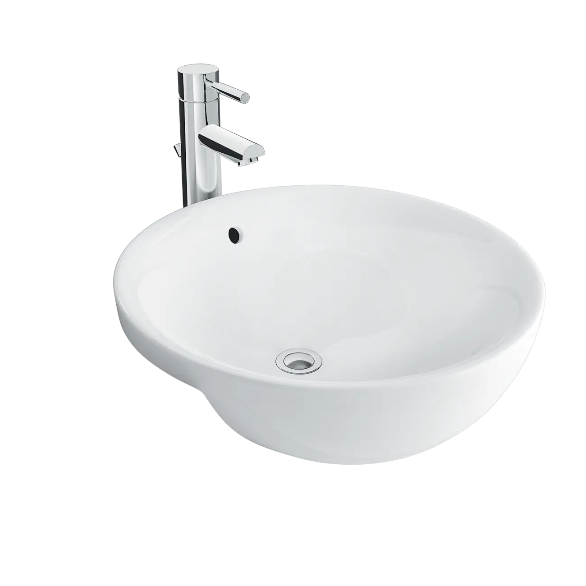
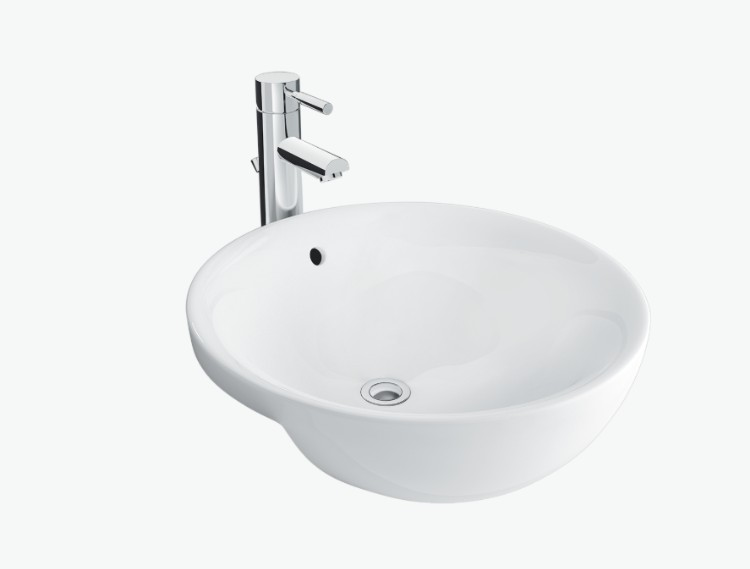
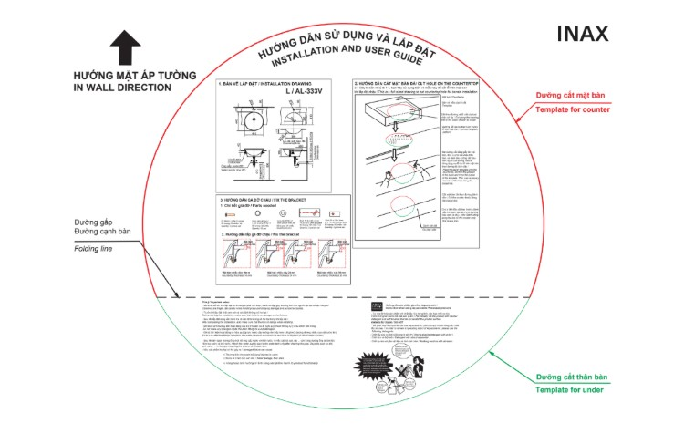

Chậu rửa bán âm L-333V là mẫu chậu rửa mặt lý tưởng cho những không gian muốn kết hợp giữa sự sang trọng của thiết kế cổ điển và tính năng tiết kiệm diện tích. Với kiểu dáng bán âm bàn độc đáo, sản phẩm tạo nên sự liền mạch, thanh lịch cho mặt bàn đá, đồng thời vẫn giữ được sự tiện nghi và độ bền vượt trội của chất liệu sứ cao cấp.Thiết kế chậu rửa bán âm L-333V cổ điển, tiết kiệm không gianKiểu dáng bán âm bàn sang trọng: Thiết kế này giúp chậu tiết kiệm không gian trên mặt bàn so với chậu đặt nổi, tạo nên một cái nhìn gọn gàng, liền mạch và thẩm mỹ.Phong cách cổ điển, trang nhã: Chậu rửa bán âm L-333V mang phong cách nhẹ nhàng, tinh tế, dễ dàng hòa hợp với nhiều thiết kế phòng tắm truyền thống hoặc tân cổ điển.Kích thước tối ưu: Chậu có kích thước cân đối 440 x 185 x 440 (mm), phù hợp với các mặt bàn có độ sâu vừa phải.Các tính năng nổi bật của L-333VChất liệu sứ cao cấp của INAXhậu được chế tạo từ chất liệu sứ cao cấp của INAX, đảm bảo độ bền vững, chống nứt vỡ và chịu được các tác động thông thường..Men sứ trắng sáng, dễ vệ sinhBề mặt chậu được phủ men sứ trắng sáng, trơn bóng, giúp dễ dàng vệ sinh và duy trì vẻ ngoài sạch sẽ, tinh tươm.Lỗ xả tràn tiện lợiL-333V có lỗ thoát tràn tiện lợi, giúp ngăn chặn tình trạng nước tràn ra ngoài khi người dùng quên khóa vòi, tăng tính an toàn trong quá trình sử dụng.Video giới thiệu chậu rửa INAXHướng dẫn sử dụng và lắp đặt chậu rửa bán âm L-333VXem hướng dẫn lắp đặt: HDLD AL-333V ; L-333V.pdfThông số kỹ thuậtChất liệuSứ cao cấpKiểu dángBán âm bànKích thước440 x 185 x 440 (mm)Thiết kếDáng oval, cổ điển, trang nhãThương hiệuINAXTính năng- Sứ cao cấp chuẩn Nhật, trắng sạch, trơn bóng, dễ dàng vệ sinh - Lỗ xả tràn tiện lợiMàu sắcTrắngKhác- Hotline tư vấn và bảo hành: 18006633
Chậu rửa bán âm L-333V
Chậu rửa thương hiệu INAX.
Đã cập nhật danh sách yêu thích.
DANH MỤC: Chậu rửa
MÃ SẢN PHẨM: L-333V
DEPTH: 440mm
HEIGHT: 185mm
WIDTH: 440mm
Chậu rửa bán âm L-333V là mẫu chậu rửa mặt lý tưởng cho những không gian muốn kết hợp giữa sự sang trọng của thiết kế cổ điển và tính năng tiết kiệm diện tích. Với kiểu dáng bán âm bàn độc đáo, sản phẩm tạo nên sự liền mạch, thanh lịch cho mặt bàn đá, đồng thời vẫn giữ được sự tiện nghi và độ bền vượt trội của chất liệu sứ cao cấp.Thiết kế chậu rửa bán âm L-333V cổ điển, tiết kiệm không gianKiểu dáng bán âm bàn sang trọng: Thiết kế này giúp chậu tiết kiệm không gian trên mặt bàn so với chậu đặt nổi, tạo nên một cái nhìn gọn gàng, liền mạch và thẩm mỹ.Phong cách cổ điển, trang nhã: Chậu rửa bán âm L-333V mang phong cách nhẹ nhàng, tinh tế, dễ dàng hòa hợp với nhiều thiết kế phòng tắm truyền thống hoặc tân cổ điển.Kích thước tối ưu: Chậu có kích thước cân đối 440 x 185 x 440 (mm), phù hợp với các mặt bàn có độ sâu vừa phải.Các tính năng nổi bật của L-333VChất liệu sứ cao cấp của INAXhậu được chế tạo từ chất liệu sứ cao cấp của INAX, đảm bảo độ bền vững, chống nứt vỡ và chịu được các tác động thông thường..Men sứ trắng sáng, dễ vệ sinhBề mặt chậu được phủ men sứ trắng sáng, trơn bóng, giúp dễ dàng vệ sinh và duy trì vẻ ngoài sạch sẽ, tinh tươm.Lỗ xả tràn tiện lợiL-333V có lỗ thoát tràn tiện lợi, giúp ngăn chặn tình trạng nước tràn ra ngoài khi người dùng quên khóa vòi, tăng tính an toàn trong quá trình sử dụng.Video giới thiệu chậu rửa INAXHướng dẫn sử dụng và lắp đặt chậu rửa bán âm L-333VXem hướng dẫn lắp đặt: HDLD AL-333V ; L-333V.pdfThông số kỹ thuậtChất liệuSứ cao cấpKiểu dángBán âm bànKích thước440 x 185 x 440 (mm)Thiết kếDáng oval, cổ điển, trang nhãThương hiệuINAXTính năng- Sứ cao cấp chuẩn Nhật, trắng sạch, trơn bóng, dễ dàng vệ sinh - Lỗ xả tràn tiện lợiMàu sắcTrắngKhác- Hotline tư vấn và bảo hành: 18006633
DANH MỤC: Chậu rửa
MÃ SẢN PHẨM: L-333V
DEPTH: 440mm
HEIGHT: 185mm
WIDTH: 440mm